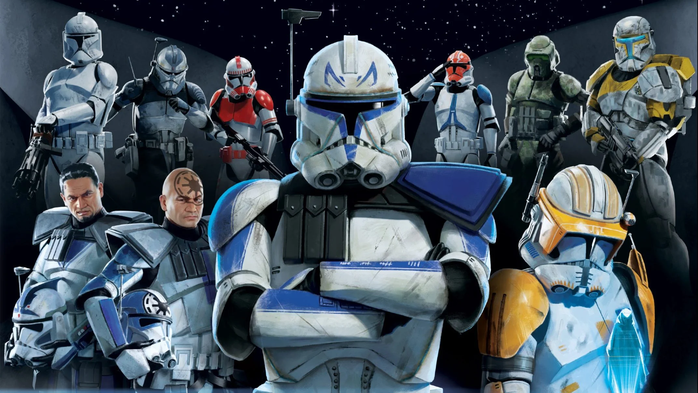

A seven season series detailing the Clone wars, a galactic-wide conflict between the Clone Trooper armies of the Republic and the
Droid armies of the CIS.

There are many battles shown between the Clones and Droids, with fantastic action scenes and leaves anyone at the edge of their seat.
The Clones are great examples of honor and self-sacrifice, putting others' safety and wellbeing above their own lives.
Not much needs to be said about this film. Its legendary nature is uncontested by members of the Star Wars community.
The mixture of live-action Clone battles, beautiful lightsaber choreography, and a thrilling and heart-wrenching story
makes this tale one for the books.
Of all of the movies, I have probably rewatched this one the most.